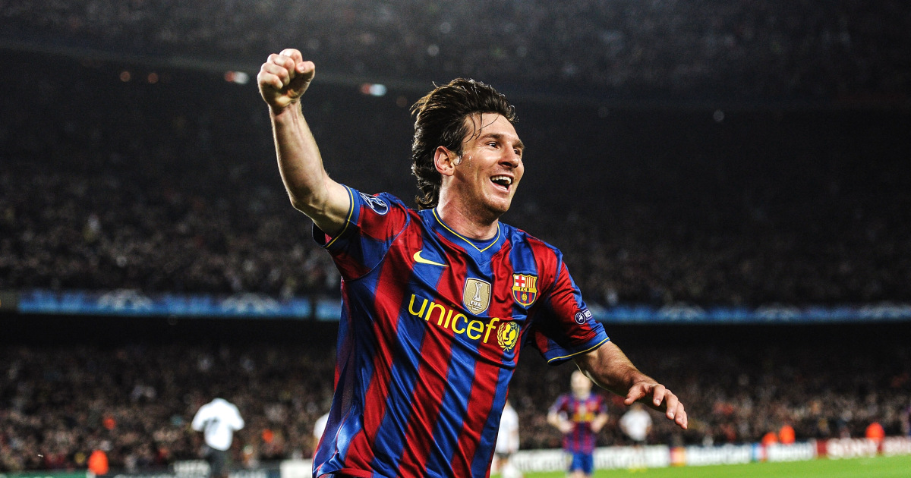

|  | Name | Lionel Messi |
| Born | 1987/6/24 (Argentina Rosario) | |
| Nationality | Argentine | |
| Height | 5'7" | |
Married With Antonela Roccuzzo |
||
Lionel Messi was born on June 24, 1987, in Rosario, Argentina. His father, Jorge Messi, was a factory worker, while his mother, Celia Cuccittini, worked in a household-related job. He is the youngest of three brothers in his family. Beginning as a Young Footballer From a young age, Messi had a strong passion for football. At the age of 5, he played for the Grandoli club, where his father coached him. By the age of 8, he joined the Newell’s Old Boys club. At 11, Messi was diagnosed with Growth Hormone Deficiency, which affected his physical development. Since his family could not afford the medical treatment, he traveled to FC Barcelona for trials. In 2000, the club agreed to cover all his medical expenses. Rise to Stardom with Barcelona At 17, Messi made his official debut for FC Barcelona’s senior team. He quickly became one of the team’s key players, winning multiple trophies, including La Liga, the UEFA Champions League, and Copa del Rey. Over 21 years at Barcelona, he became one of the greatest legends of the club. Club Transfers 2021 – Transferred from FC Barcelona to Paris Saint-Germain (PSG) 2023 – Moved to Inter Miami CF (Major League Soccer) International Career and Achievements Messi started playing for Argentina’s national team in 2005. In 2022, he led Argentina to victory in the FIFA World Cup, earning the title of the Greatest of All Time (GOAT). Family and Personal Life In 2017, Messi married Antonela Roccuzzo, and they have three sons: Thiago, Mateo, and Ciro Messi. Conclusion Throughout his career, Lionel Messi has won 8 Ballon d’Or awards, 1 FIFA World Cup, and 4 UEFA Champions League titles. He is regarded as one of the greatest footballers of all time.